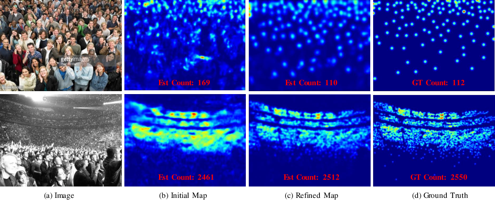

A desktop based application which can detect density of crowd in any public place.
After Covid19 outbreak crowd management has became a crucial thing in every public event. This application can help in this situation.
A Multicolumn Convolutional Neural Network (MCNN) is used for this application. It has three different columns, each of them has different sizes of kernel. It helps model to detect different sizes of head in crowd.
This is a Desktop based application which can recognize you and monitor you, wheather you are sleeping or not. It is helpful for those students who can not concentrate on their studies and fall asleep during their study. Algorithm can detect your eye condition and based on that genarate an alert through in build voice.
This is a Flask based application, which can detect number plate from any vehicle. Any image or video you can upload. System can detect numberplate.
This is helpful for detection of the vehicles which breaks traffic rules.
Face Matching with Bollywood Celebrity

Algorithm can detect your face and map your face with bollywood celebrities.
Probabilistic model has been used for this application. Based on various weather condition it predicts the visibility in the air.
Helpful for Air Traffic Control.
Based on various components of a wafer, algorithm can predict whether the wafer is in a good or bad condition.